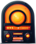

2
Your favorite radio
Create your own radio station!
It's simple!
It's much harder to do it right!
More than 500 new radio stations appear on online platforms such as YouTube every month. And only a few of them become popular and bring significant profit. What's the secret? What is the formula for success? Find out at the upcoming two-day free intensive!
To learn more
What awaits you in our intensive?
2 free full-fledged training webinars, where:
In just two free webinars, we will teach you how to:
create yone radio with our franchise
We will show you how to properly optimize your
website and make it attractive to search engines.
Only fresh, professional and relevant information!
You will learn what “good indexing”, “high traffic”,
“stable increase in visitors”, “TOP for queries” are
and, what is much more important, how to achieve
all these indicators!
What is online radio and why is it needed?

Online radio has revolutionized the way we consume audio content. With just a click or
a tap, listeners can
access a diverse array of music, talk shows, news, and podcasts from around the globe. Unlike traditional
radio, online radio offers a virtually limitless selection of stations catering to every taste and interest
Whether you're into pop, rock, jazz, classical, or any other genre or even podcasts,
there's an online radio
station for you. Online radio also provides opportunities for independent artists and niche genres to reach a
wider audience
Furthermore, the convenience of online radio cannot be overstated. It's accessible
anytime, anywhere,
whether you're at home, work, or on the go. With mobile apps and streaming services, listeners can enjoy
their favorite stations on smartphones, tablets, or computers with an internet connection
We will teach you how to create an attractive online radio for users and the
right website for search engines and advise you on how to get it to the first pages, beating all competitors.
After completing the training you will be able to!
Create your own radio and website
Optimize them correctly
Provide them with slow but sure growth to the TOP
Achieve a stable increase in visitors
Receive tangible profits
Bonuses and gifts are provided for all intensive participants. Click
the button below, to sign up for the take part in the webinars and collect your prize
upon completion of the training!
The first webinar will BE:
September 10 at 20:00 GTM+0
Hurry up to register, the number of places is limited!